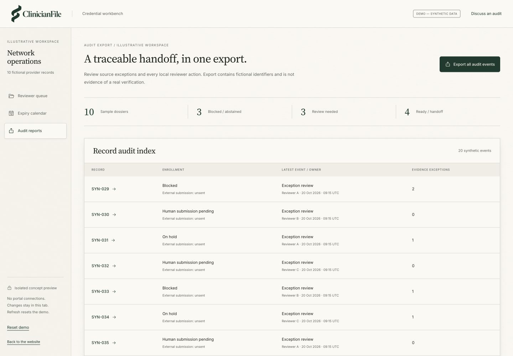

Proposed module 05 / Credential Report / Research-stage concept
Let the evidence travel with the discrepancy.
Network-directory discrepancy and audit export.
The work it owns
Credential Report
Network operations and oversight reviewers can compare a bounded directory extract with a dated dossier, then inspect who owns a proposed correction.
Inspect the related demo workflow- Inputs
- Permitted directory extract; dossier values; source references; review events; export rights.
- Workflow
- Compare source-attributed values → flag a discrepancy → assign human review → export an illustrative audit trail.
- Permission and exceptions
- Directory corrections require permission and human review. The preview exports synthetic local events only and never updates an external directory.
- Proposed output and evidence
- Discrepancy queue and audit export. No verified source quality or regulatory compliance is asserted.
Illustrative directory discrepancy
One address difference. No automatic correction.
Dossier / SYN-029
Example site A
Synthetic directory extract
Example site B
Reviewer A owns reconciliation. Source and export rights are unconfirmed; no external directory is read or changed.
Actual synthetic workbench / Concept preview
Illustrative audit events, traceable to a fictional record and reviewer.

Before a pilot
Is Credential Report available today?
No. This is a proposed module and a synthetic concept preview. No adoption, live integration, or efficacy is established.
What would need to be agreed first?
Written scope, source and export rights, consent, a named operations owner, reviewer authority, baseline, security/data-access review, and the pilot readiness gates.
How would the commercial model work?
The willingness-to-pay test is $500 per 100 actively managed providers per month plus $4,000 implementation. This is hypothetical, not an active offer or separate module price.
Start with the observed workflow